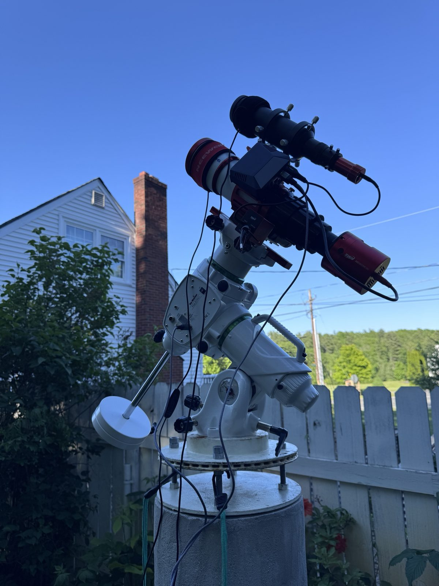
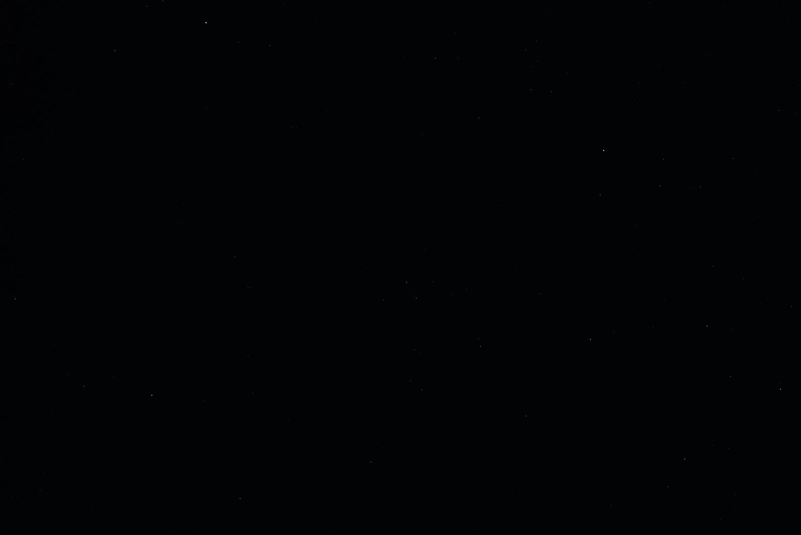
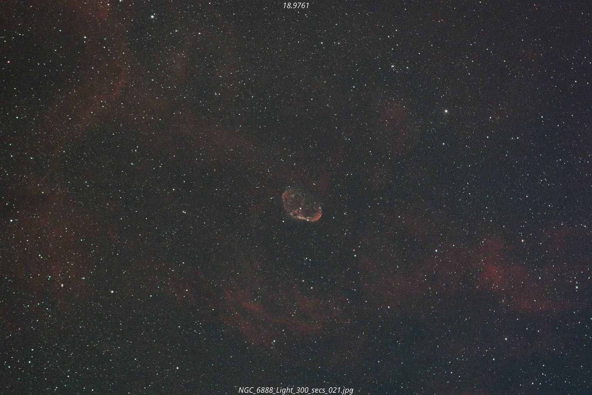
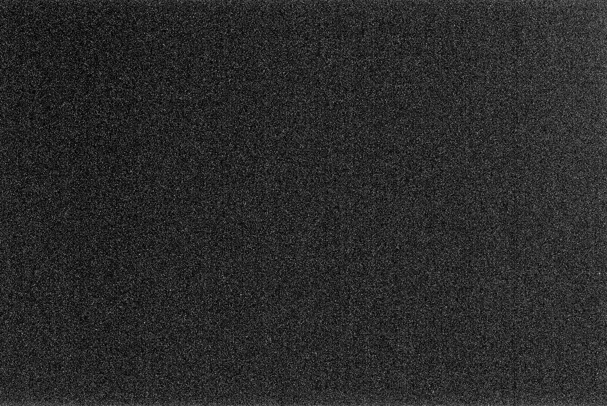
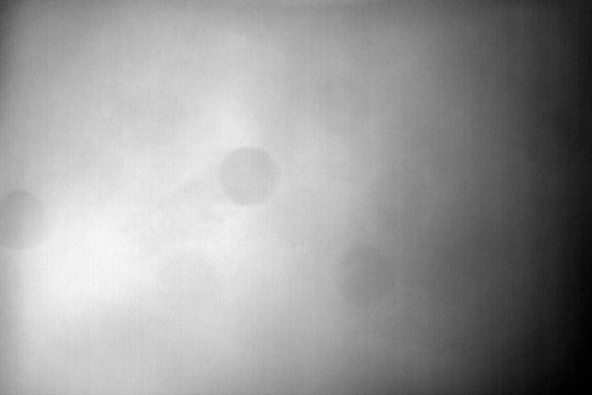
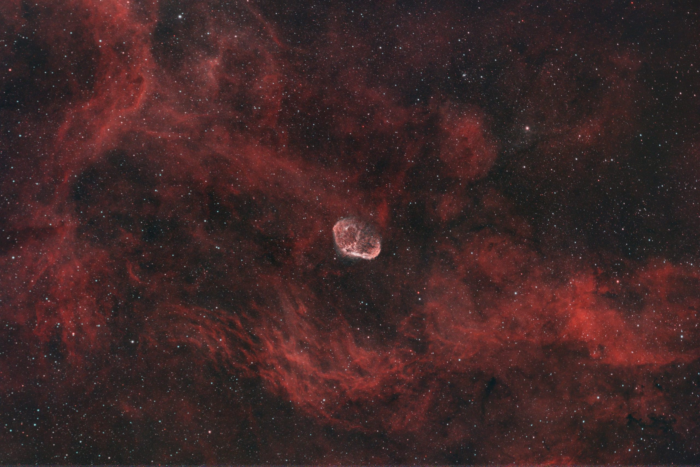
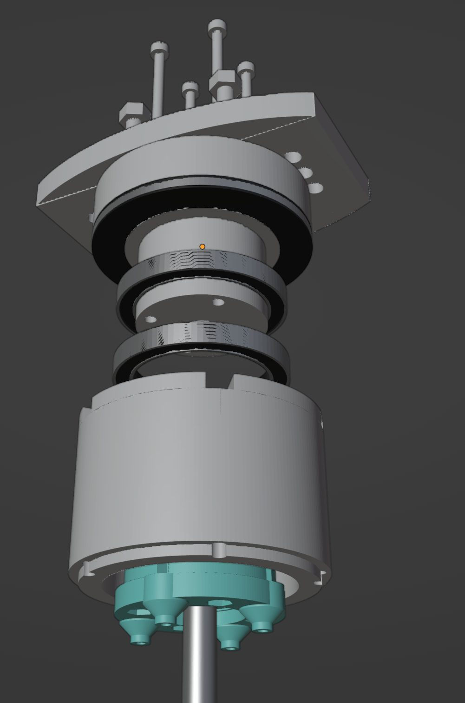
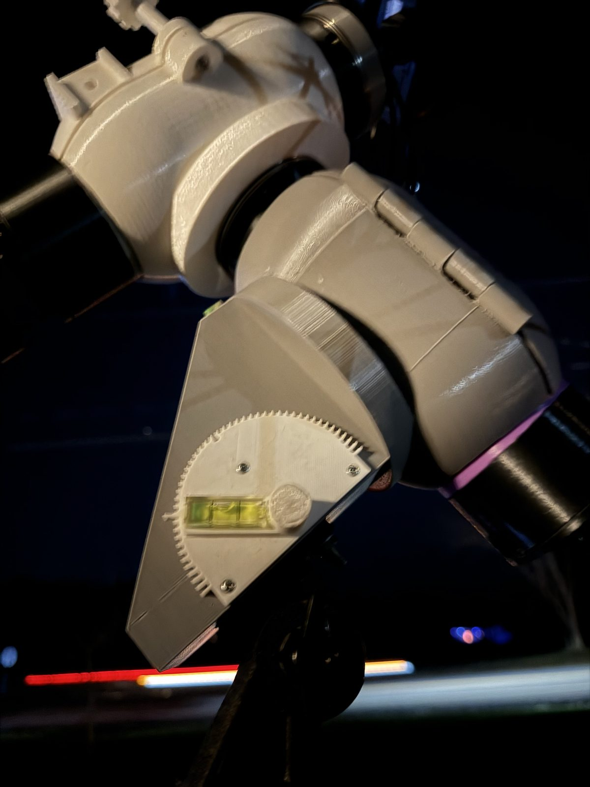
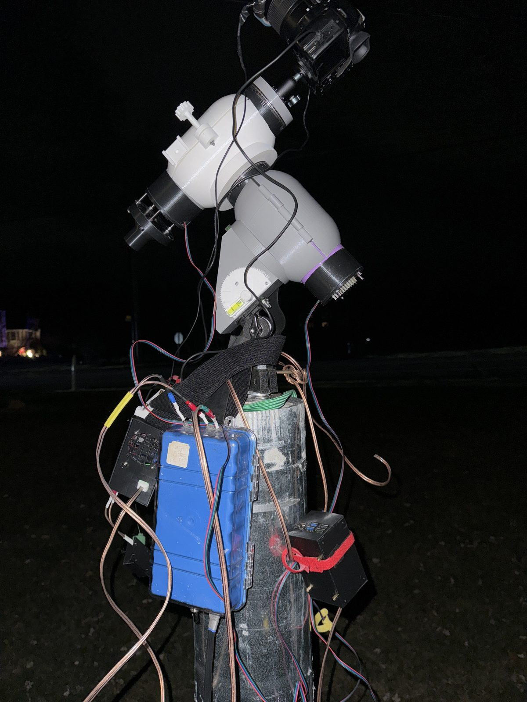

A telescope in the backyard, driven from the couch
Everything on this site came off a concrete pier behind my house. I set it up, walk inside, and spend the night watching a phone. That sounds like cheating, and it is.
- Targets
- 144
- Hours of exposure
- 175
- Frames
- 4,490
- Messier
- 53/110
The rig
A small refractor — a telescope that uses lenses rather than a mirror — about three inches across, chosen on purpose: most of what's worth photographing up there is larger than the full moon, just very faint, so a wide view beats magnification.
It rides a motorised equatorial mount. One of its axes is tilted to point at the celestial pole, so turning that single axis at exactly the Earth's rate cancels the sky's rotation. The mount sits on a six-foot concrete pier, so that alignment stays put between nights.
The camera is a dedicated astronomy camera rather than a regular one: no lens, no shutter, no screen, and a thermoelectric cooler that holds the sensor around −10°C even on a summer night, because a warm sensor produces its own false signal over a five-minute exposure. Beside the telescope rides a second, smaller scope and camera used only for guiding, and a motor turns the focus knob.
A Raspberry Pi strapped to the mount runs all of it as a headless device server. The desktop inside runs the capture and guiding software against it over the network, and a small dashboard puts the latest frame, guiding error and alerts on my phone. Most nights I'm checking a telescope the way other people check a build.
One picture, start to finish
The Crescent Nebula, NGC 6888: a shell of gas blown off a dying star about 5,000 light-years away, shot on 2026-08-28 through a filter that only lets through hydrogen and oxygen light.





- Frames
- 33 × 300s
- Total exposure
- 2.75h
- Guide corrections
- 5,480
- Tracking error
- 1.13″
Over the 173 minutes of that session the guide camera took 5,480 pictures of one star and corrected the mount after each. An error of 1.13 arcseconds is about the width of a coin seen from three kilometres away.
It started as a 3D print


Before any of the store-bought gear, I designed and printed my own equatorial mount with goto — stepper motors, printed gears, a Pi, and software I wrote for plate solving and camera control. It photographed the 2024 solar eclipse from a box with buttons on it.

It worked, in the sense that it pointed at things. It also taught me exactly how hard the problem is, which is why there is now a commercial mount on the pier. The software ideas survived; the gears did not.
What a night actually involves
- Plate solving
- The software photographs the sky, matches the star pattern against a catalog, and works out where the telescope is really pointing, to a fraction of a pixel. GPS, but from a picture of the stars.
- Guiding
- A second camera watches a single star and nudges the mount every couple of seconds. The goal is to hold the image still to under an arcsecond while the Earth turns underneath it — a control loop whose disturbance is the planet.
- Autofocus
- A motor steps the focuser through a V-curve of star sizes and parks at the bottom. Metal shrinks as the night cools, so it does this again every hour or so.
- Stacking
- A single frame is mostly noise. Averaging N of them reduces noise by √N, so twice the quality costs four times the exposure. That is why the hours column above is large, and why one picture here is often several nights.
What's next
All 110 Messier objects (53 so far, tracked here). A large mosaic, a grid of panels with a night or more each, which will take seasons. A narrowband filter that only admits hydrogen and oxygen light, so nebulae stay shootable under a full moon. And, eventually, a dome, so I can stop covering the scope with a tarp every morning.
The light in some of these pictures left its source 11.7 billion years ago. The last few metres of the trip were through a USB cable.
Things people don't expect
- Without tracking, a star smears across ~2,000 pixels
- The sky turns 15 arcseconds every second, and each pixel covers 2.27. Over a five-minute exposure an untracked star would draw a line about two thousand pixels long. That is the whole reason for the mount and the guiding.
- The frame is about eight full moons wide
- 3.9° × 2.6° of sky. Plenty of targets are enormous but faint — Andromeda is about six moons across; you just can't see it with your eyes.
- 175 hours is 7.3 days with the shutter open
- Every picture on this site, laid end to end.
- Each raw frame is 52 MB
- 26 megapixels at 16 bits. The Crescent night above was 1.7 GB of raw data, and processing multiplies that about six times over in intermediate files.
- Plate solving is a hash lookup
- Take any four stars in the frame, describe the shape they make in a way that ignores size and rotation, and you have a geometric hash. Look it up in a precomputed index of the whole sky and you know where you are pointing — no starting guess needed.
- It's open source all the way down
- Device drivers, capture, guiding, plate solving and stacking are all free, open-source software.
- Some of this light is older than the Earth
- The quasar in the gallery is 11.7 billion years away in light-travel time. The Earth is 4.5 billion years old.
- The colours on the Mineral Moon are real
- Exaggerated, but real: the blues are titanium-rich lava plains and the oranges are iron-rich. Geology, from a backyard.
Take it with you
Point a phone at this to browse the whole gallery — every target, how long it took, and which gear it was shot with.